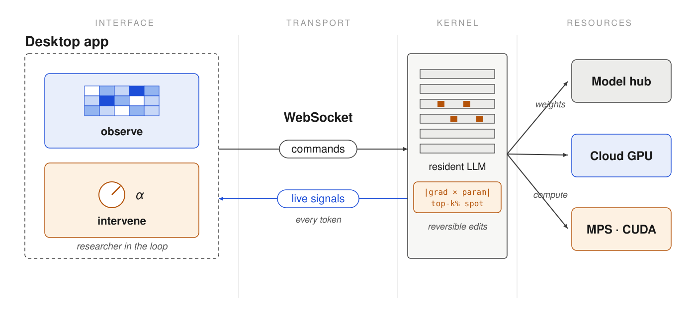
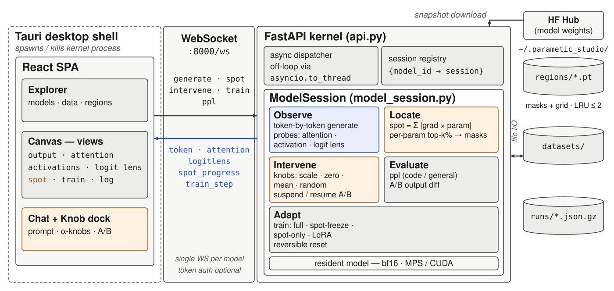
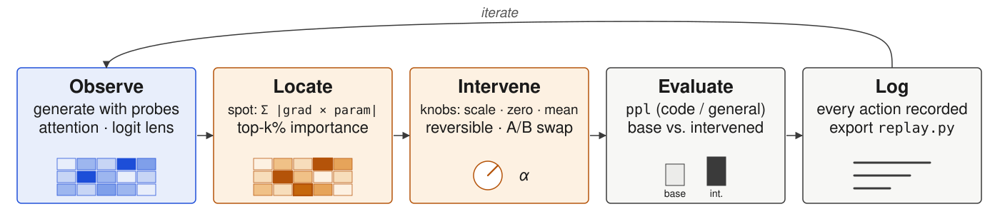
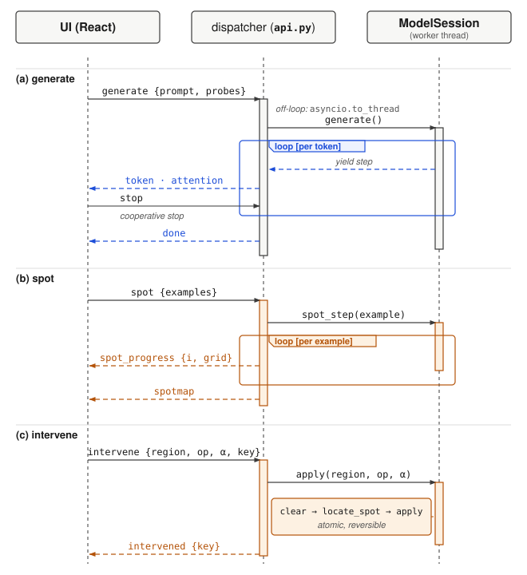
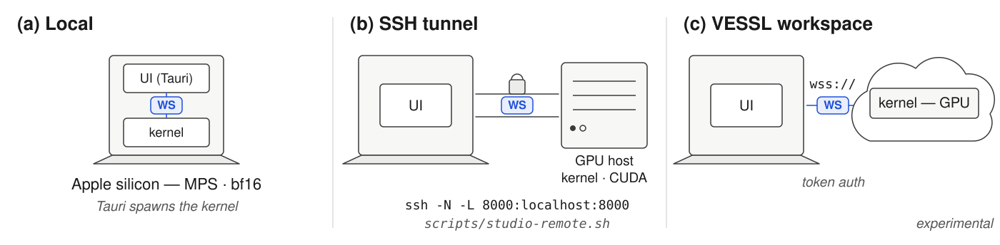

Figure 1 (overview): Parametic Studio at a glance — interactive workbench, one bidirectional stream, live model kernel; runs anywhere. (figure*, 7in)

Figure 1: Parametic Studio system architecture. (figure*, 7in)

Figure 2: The interaction loop: observe → locate → intervene → evaluate → log. (figure*, 7in)

Figure 3: WebSocket streaming sequences. (single column, 3.3in)

Figure 4: Deployment topologies — same WS protocol, different placement. (figure*, 7in)